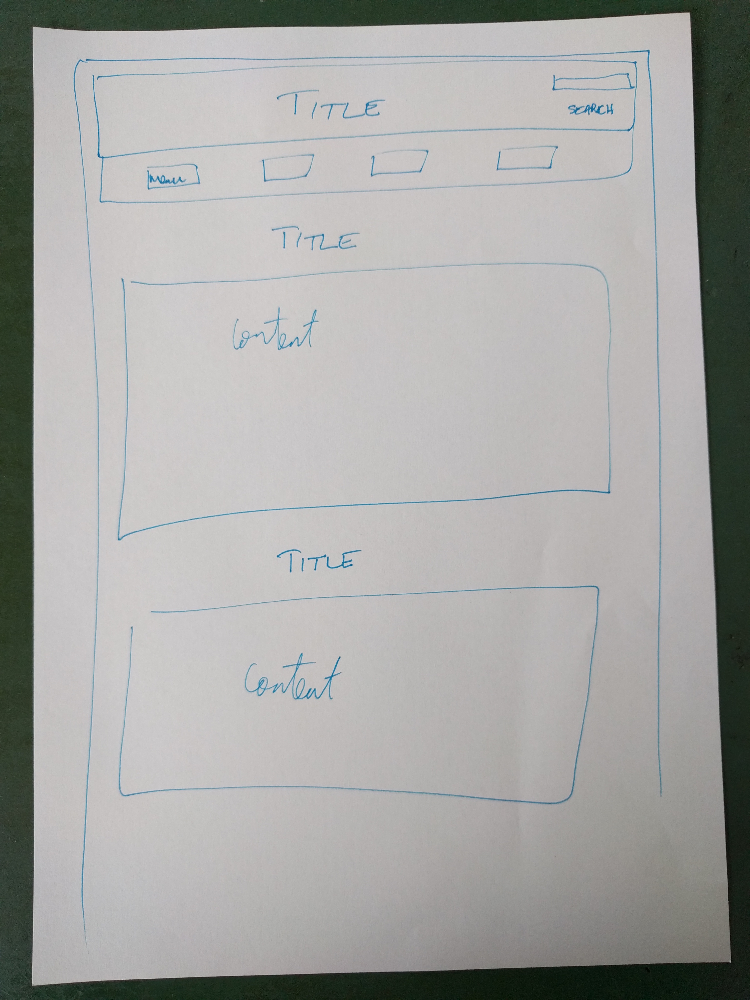
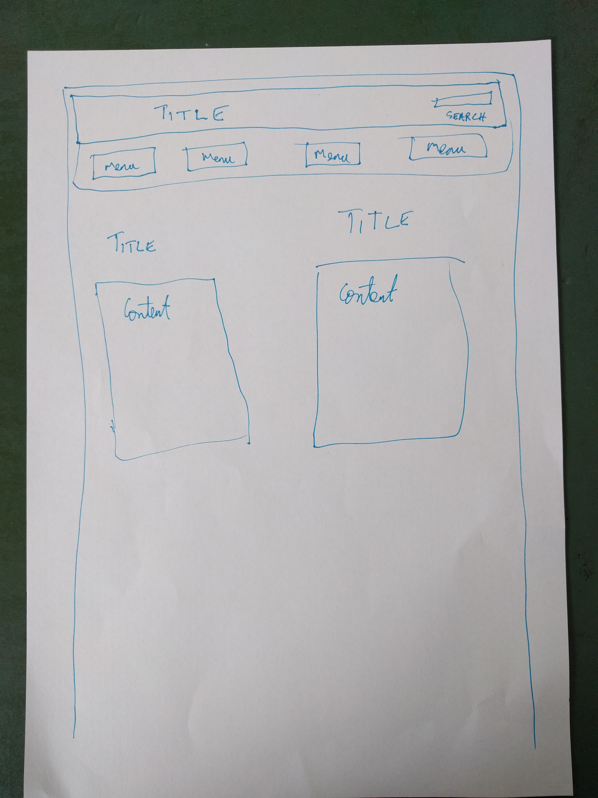

It is a website that is made to adjust itself depending on the size of the screen it is being viewed on. It's important because a single website can be created to suit any resolution screen on any device. The same website can be used on a mobile, tablet, laptop, etc.
It's designing the website to suit a mobile platform first. It is adapted to suit other devices but first and foremost its designed for mobile devices. It's important because mobile devices are becoming more and more popular and a lot of people view websites mostly on their phones. Hence it is important to create sites with mobile devices in mind first.
They are templates for websites. Sites used creating frameworks will follow an established structure. Pros are that it greatly improves the amount of time it takes to complete a website. Cons might be that in some ways it might become difficult to completely customize it to your liking.
A wireframe is an outline of a website (either hand drawn or using software) to map out where all the "boxes" in your design will go. Everything from where all the elements will be placed to roughly there sizing can be drawn out so we get a good feel for what the finished site will look like. This gives a clear picture in our mind and then we can simply build it because the picture is infront of us.
 Some simple things like extending the background colour behind the title to cover the entire length of the page. Some of the positioning of the text in the title to move it down slightly. Even though I did reduce the size of the images, I had to it within the HTML code rather than CSS which I couldn't get to work.
{kind=link}
{kind=link}
{kind=link}
{kind=link}